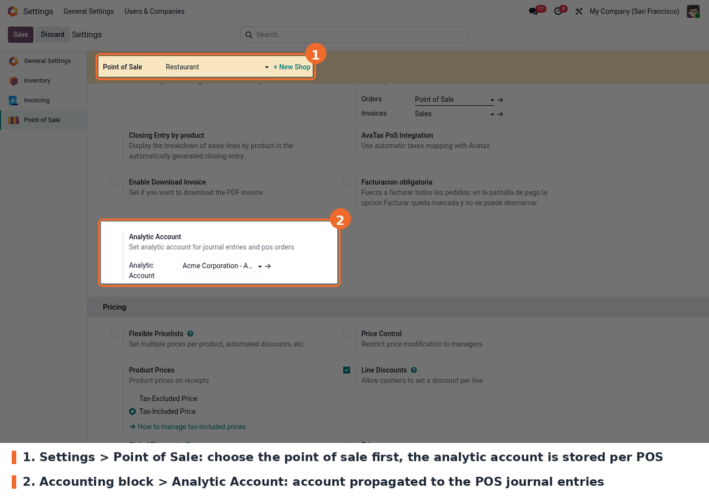
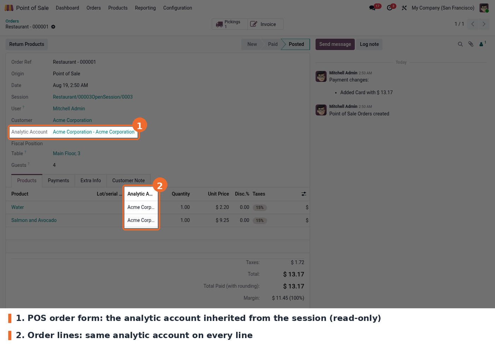
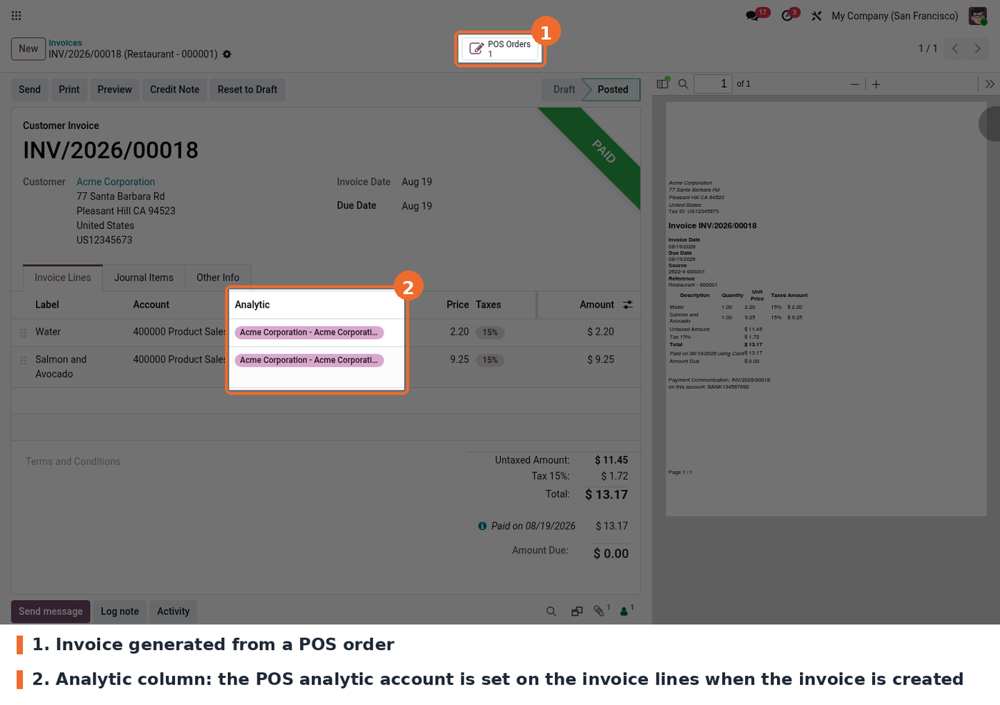
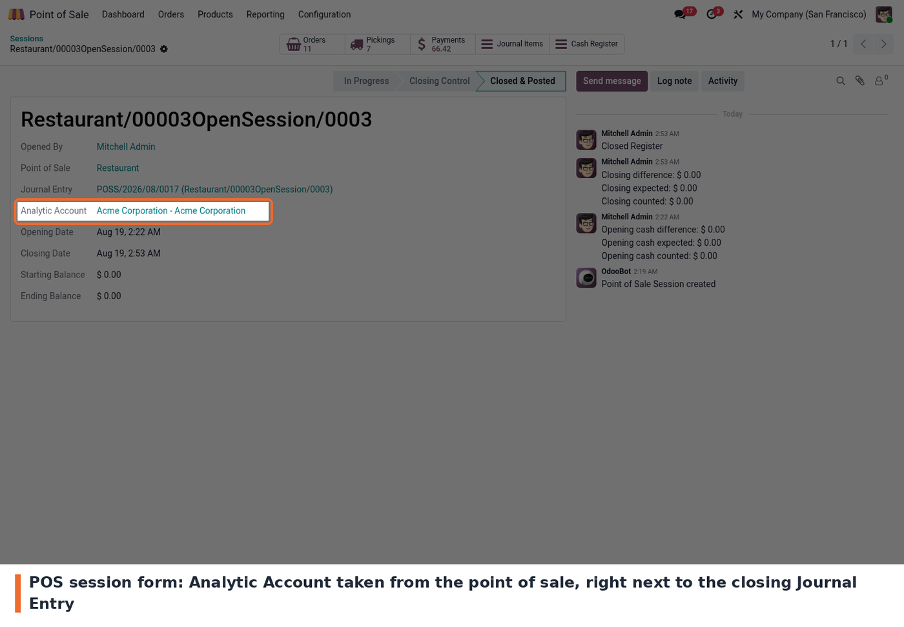
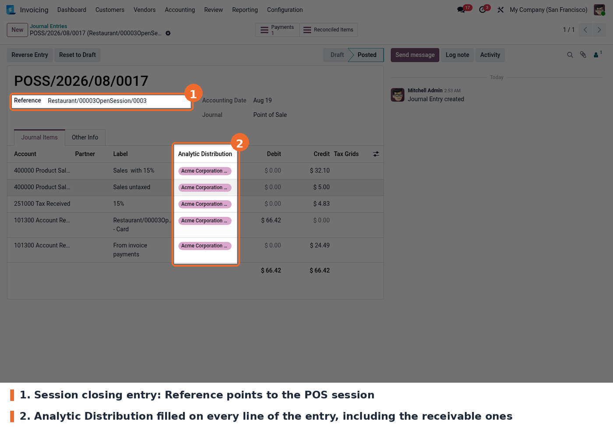

This module gives every point of sale an Analytic Account and lets it flow to the accounting records the Point of Sale produces. Once the account is set on the shop, the module writes the matching analytic distribution (100 % to that account) on the sale lines of the session closing entry, on the stock expense and stock valuation lines of that entry, and on the customer invoice when a POS order is invoiced. When the session is closed and posted, every line of the moves related to the session carries the distribution.
The analytic account is also shown on the POS order, on its lines and on the POS session, so
the link between a register and its analytic account can be checked without opening the
journal entries. The module is entirely back office: nothing changes in the POS front end.
It works on Odoo 19.0, Community and Enterprise, and depends on point_of_sale and
analytic.
The analytic fields are only visible with the Analytic Accounting group enabled. Turn on the Analytic Accounting option of the Accounting settings, or grant the group from Settings › Users & Companies › Users. Without that group the setting simply does not appear and the module looks like it does nothing.
To set the account:
The value is stored per point of sale, so it has to be repeated for every shop that needs analytic tracking.
After changing the setting, reopen the Point of Sale from the backend (Open Register / Continue Selling). Reloading the POS tab is not enough for the new value to reach the session.
The account is picked in the Point of Sale settings, in the Accounting block.

Analytic Account field in the Point of Sale settings
1. POS order. Every order of a session inherits the analytic account of the point of sale. The field is read-only: it follows the session, it is not typed order by order.

Analytic account on the POS order and its lines
2. Invoiced order. When the customer asks for an invoice, the invoice lines are created with the analytic distribution already set. There is no manual step at invoicing time.

Analytic column filled on the invoice generated from a POS order
3. POS session. The session shows the same analytic account next to the journal entry created when the register is closed.

Analytic account on the POS session form
4. Session closing entry. This is the result: the closing journal entry of the session carries the analytic distribution on its lines.

Session closing journal entry with the analytic distribution filled
Journal entries are only visible to users with accounting access rights; the point of sale cashier does not need them.
static/description/icon.png is 446x446 px, while the core modules use 100x100 px. It
should be resized or replaced.